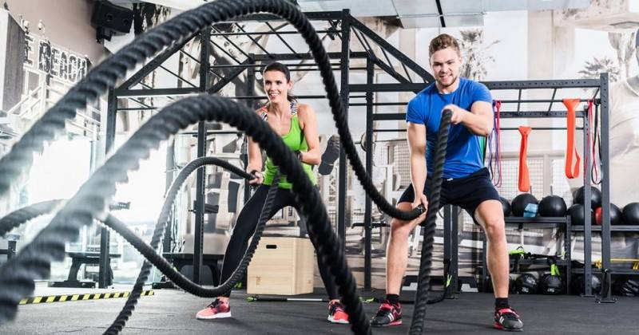
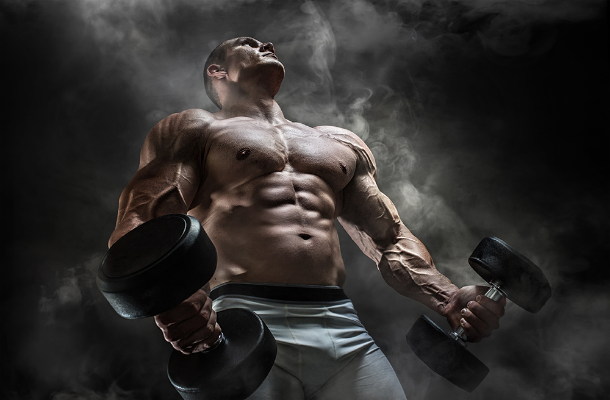
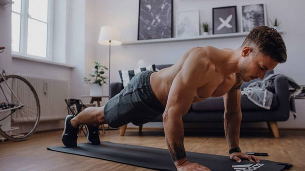

Похудение в зале:
 Правильное питание:
Соблюдайте дефицит калорий:Потребляйте меньше калорий, чем вы тратите, чтобы ваш организм начал использовать запасы жира в качестве источника энергии. Питайтесь сбалансированно: Увеличьте потребление овощей, фруктов, белковых продуктов, цельных зерен и здоровых жиров. Ограничьте потребление пустых углеводов и обработанных продуктов.
Регулярные тренировки:
Кардио-тренировки: Занятия кардио (бег, плавание, езда на велосипеде и др.) помогут сжигать калории и улучшать общую выносливость. Силовые тренировки: Увеличение мышечной массы поможет увеличить базовый обмен веществ, что способствует сжиганию калорий даже в покое.
Выполнение комплексных упражнений:
Оптимальные результаты достигаются чередованием упражнений для всего тела, таких как приседания, жимы, подтягивания, отжимания и т.д.
Увеличение физической активности в повседневной жизни:
Помимо тренировок в зале, старайтесь двигаться больше в повседневной жизни. Используйте лестницу вместо лифта, прогуливайтесь на свежем воздухе, делайте пешеходные прогулки.
Регулярное питание:
Ешьте регулярно и не пропускайте приемы пищи. Это поможет поддерживать обмен веществ на оптимальном уровне.
Сон и стресс:
Поддерживайте нормальный сон и управляйте стрессом. Недостаток сна и хронический стресс могут оказывать негативное воздействие на вес.
Контроль прогресса:
Ведите дневник питания и тренировок, чтобы отслеживать свой прогресс и внести коррективы в случае необходим.
Набор мышечной массы в зале:
 Для эффективного набора мышечной массы важно сочетать правильное питание, тренировки с подходящей нагрузкой и отдых. Вот некоторые общие советы для зала, направленные на набор мышечной массы:
Питание:
Увеличьте калорийность: Для набора массы вам потребуется потреблять больше калорий, чем вы тратите. Это создаст положительный калорийный баланс, способствующий набору веса. Белок: Питайтесь белками, так как они являются основными строительными блоками мышц. Увеличьте потребление мяса, птицы, рыбы, яиц, молочных продуктов, бобов и других источников белка. Углеводы: Углеводы предоставляют энергию для тренировок и восстановления. Предпочтите комплексные углеводы, такие как овсянка, картофель, рис и полнозерновой хлеб. Здоровые жиры: Включите в рацион полиненасыщенные и мононенасыщенные жиры, которые помогут поддерживать общее здоровье.
Силовые тренировки:
Основной акцент должен быть на тренировках с тяжёлыми весами. Используйте базовые упражнения, такие как приседания, жим лёжа, тяга, подтягивания и разные вариации этих упражнений. Объем и интенсивность: Увеличивайте нагрузку постепенно и контролируйте интенсивность тренировок. Добавляйте новые упражнения и варьируйте подходы. Частота тренировок: Дайте каждой группе мышц достаточно времени для восстановления. Рекомендуется тренировать одну группу мышц 2-3 раза в неделю.
Восстановление:
Позвольте своим мышцам восстанавливаться между тренировками. Плохой сон и недостаточный отдых могут замедлить набор массы. Разнообразие: Включите в режим тренировок дни отдыха и лёгкие тренировки для поддержания интереса и предотвращения переутомления. Гидратация: Пейте достаточно воды, чтобы поддерживать гидратацию организма, что важно для функционирования мышц и общего здоровья.
Прогрессирующее увеличение нагрузки:
Постепенно увеличивайте веса и интенсивность тренировок. Это поможет стимулировать рост мышц.
Контроль за питанием:
Ведите учёт потребляемых калорий и макроэлементов (белки, жиры, углеводы), чтобы обеспечить правильное питание для набора массы.
Консультация с профессионалом:
При необходимости проконсультируйтесь с инструктором по фитнесу или диетологом, чтобы разработать наиболее подходящий план тренировок и питания.
Не забывайте, что набор мышечной массы – это процесс, требующий времени и терпения. Регулярность, правильное питание и хороший сон играют ключевую роль в достижении желаемых результатов.
Похудение дома:
 Для эффективного похудения дома важно сочетать правильное питание, регулярные тренировки и здоровый образ жизни. Вот некоторые рекомендации для достижения этой цели:
Питание:
Контролируйте калорийность: Создайте отрицательный калорийный баланс, потребляя меньше калорий, чем вы тратите. Это позволит вам начать терять вес. Здоровые продукты: Увеличьте потребление овощей, фруктов, полнозерновых продуктов, белковых источников (мясо, рыба, яйца, бобовые) и здоровых жиров (орехи, авокадо, оливковое масло). Умеренные порции: Контролируйте размер порций, чтобы избежать переедания.
Тренировки:
Кардиотренировки: Включите кардио ваших тренировок для сжигания калорий. Это могут быть бег, скакалка, велотренажер или аэробные упражнения. Силовые тренировки: Не забывайте также включать упражнения с нагрузкой для поддержания мышечной массы во время похудения. Высокоинтенсивные тренировки (HIIT): Эффективный способ увеличить общее количество сжигаемых калорий и улучшить метаболизм.
Водопотребление:
Пейте достаточно воды в течение дня. Это поможет ускорить обмен веществ и поддержать общее здоровье.
Режим сна и стресс:
Старайтесь спать от 7 до 9 часов в сутки, так как недостаток сна может негативно повлиять на метаболизм и аппетит. Управляйте стрессом. Стресс может способствовать избыточному питанию, поэтому занимайтесь релаксацией, медитацией или йогой.
Постоянство и мотивация:
Установите четкие цели и ведите отслеживание прогресса. Это поможет вам оставаться мотивированными. Разнообразьте свои тренировки, чтобы избежать рутины и поддерживать интерес к физической активности.
Планирование и самодисциплина:
Создайте план питания и тренировок, придерживайтесь его и избегайте пропусков. Разработайте здоровые привычки, которые будут поддерживать ваше стремление к похудению.
Консультация с профессионалом:
Если это возможно, проконсультируйтесь с диетологом или тренером, чтобы получить персонализированные рекомендации и план действий. Запомните, что похудение – это процесс, требующий времени и усилий. Важно делать плавные изменения в образе жизни, чтобы добиться стабильных и долгосрочных результатов.
Набор мышечной массы дома:
Если вы хотите заниматься набором мышечной массы дома, то это также вполне возможно. Вот некоторые рекомендации для эффективных тренировок набора мышц в домашних условиях:
Планирование тренировок:
Разработайте план тренировок, включающий разнообразные упражнения на разные группы мышц. Обязательно включите базовые упражнения, такие как отжимания, приседания и подтягивания. Разделите тренировки на группы мышц (например, верхняя часть тела, нижняя часть тела) и распределите их по дням. Постепенно увеличивайте интенсивность и объем тренировок.
Оборудование:
Если у вас есть домашние тренажеры (штанга, гантели, турник и т.д.), используйте их для тренировок с нагрузкой. Если у вас нет специализированного оборудования, вы можете использовать свой вес тела для выполнения упражнений, таких как отжимания, подтягивания, выпады и приседания.
Приспособления:
Для поддержания прогресса можно приобрести некоторые приспособления, например, резиновые растяжки, гири, браслеты для подтягиваний и другие, которые позволят вам разнообразить тренировки.
Техника выполнения:
Очень важно выполнять упражнения с правильной техникой, чтобы избежать травм. Инструкции по технике можно найти в онлайн-ресурсах или обратиться к специалистам.
Питание и отдых:
В домашних условиях так же важно поддерживать правильное питание и обеспечивать организм достаточным количеством белка, углеводов и жиров. Обратите внимание на режим сна и отдыха, так как это важные аспекты для набора мышечной массы.
Мотивация:
Заниматься дома может потребовать больше самодисциплины и мотивации. Установите себе конкретные цели и отслеживайте свой прогресс.
Онлайн-ресурсы:
В интернете множество видеороликов и тренировок для набора мышечной массы дома. Вы можете воспользоваться такими ресурсами для разнообразия тренировок. Помните, что успешный набор мышечной массы требует постоянства и терпения. Независимо от того, где вы тренируетесь, ключевое значение имеют правильное питание, эффективные тренировки и хороший режим отдыха.